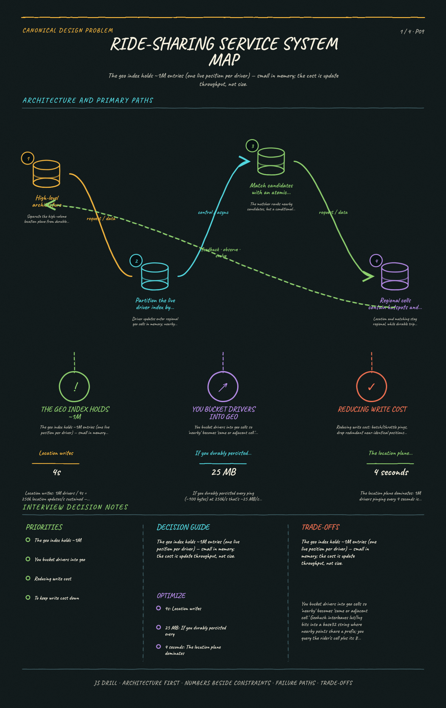
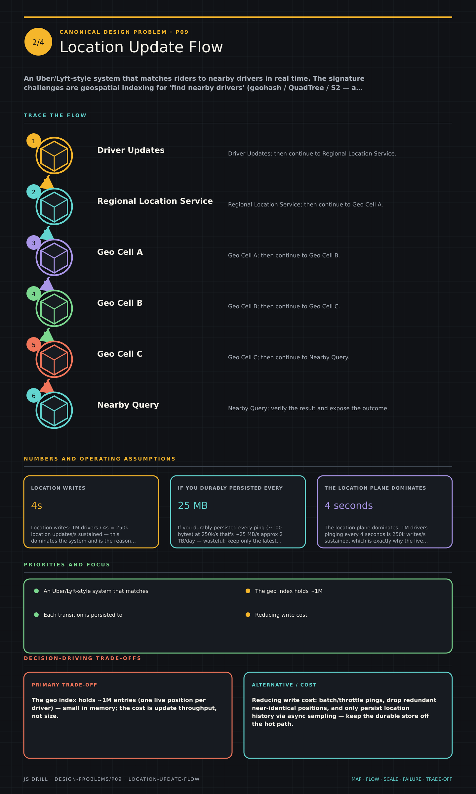
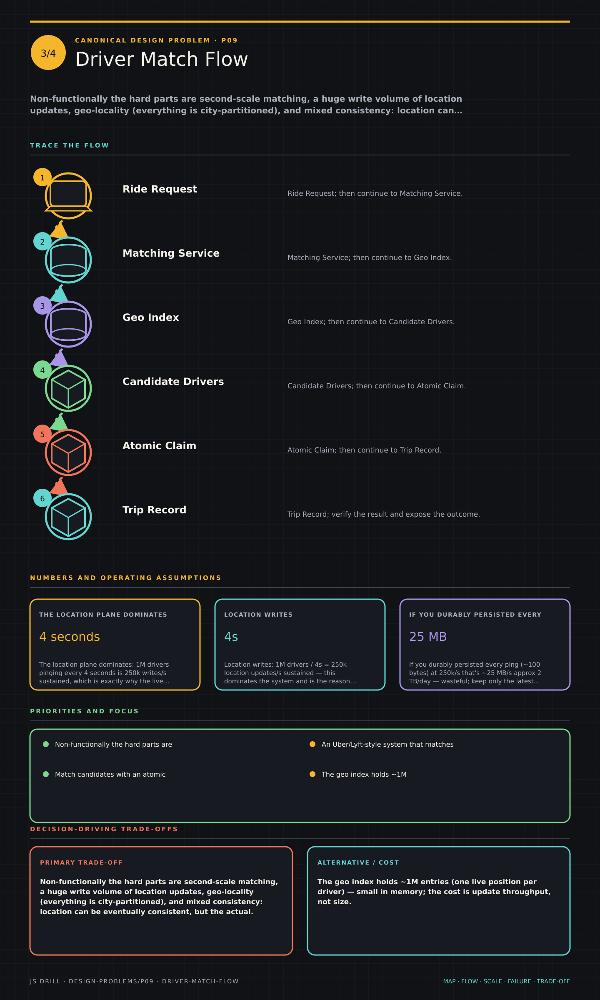
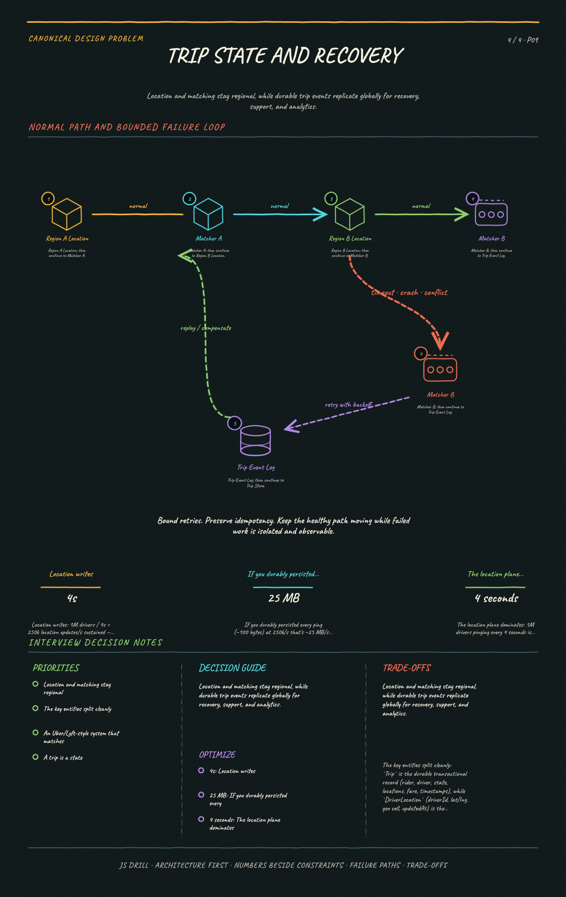

An Uber/Lyft-style system that matches riders to nearby drivers in real time. The signature challenges are geospatial indexing for 'find nearby drivers' (geohash / QuadTree / S2 — a plain lat/lng B-tree fails), absorbing high-frequency driver location writes, the matching/dispatch flow with the guarantee that a driver is matched to exactly one rider, plus the trip state machine, ETA, and surge.
Canonical Design Problems9 questions
Results carried by this link
The brief
Functional requirements
Rider requests a ride; match a nearby available driver; live tracking both ways; trip lifecycle (accept/arrive/start/complete); fare, ETA, surge pricing.
Two client types: drivers (frequent location pings, receive offers) and riders (request, track, pay).
A driver may be offered to only one rider at a time — the assignment must be atomic.
Payments, maps and routing are treated as services we call.
Scale & constraints
1M active drivers pinging every 4s → 250K location writes/s sustained
Keep only the latest position per driver — persisting every ping would be ~2 TB/day of near-useless data
Tens of millions of trips/day is only hundreds-to-low-thousands QPS by comparison
The live geo index is ~1M entries — small. The challenge is update throughput, not storage size.
Load concentrates in dense cities at rush hour, so per-shard peaks dwarf the global average
Key ideas
Nearest-neighbor search on a sphere needs a geospatial index (geohash / QuadTree / Google S2), not a B-tree on lat and lng — a two-column B-tree can't do proximity in one dimension.
Driver locations are a firehose of writes (every few seconds); keep the live location index in memory (Redis Geo / in-memory grid), not in a durable OLTP table on the hot path.
Matching queries the geo index for candidate drivers in the rider's cell(s), ranks by ETA, then offers the trip.
Exactly-once matching: a driver must be locked/claimed atomically so two concurrent riders can't both be assigned the same driver.
A trip is a state machine (requested -> matched -> accepted -> arrived -> in-progress -> completed, plus cancel paths) driving the whole lifecycle.
ETA and surge are computed from real-time supply/demand in a cell; surge is a demand/supply multiplier per geo region.
Separate the write-heavy real-time location plane from the durable trip/transaction plane so location load never threatens payment/trip data.
Diagrams
4 study sheets · 4 authored diagrams (source below, rendered in the app).

Ride-Sharing Service system mapSystem mapGive ride-sharing service system map enough room to trace independently, including scale, failure behavior, and the decision-driving trade-offs.Open the full-size image

Location Update FlowWrite flowGive location update flow enough room to trace independently, including scale, failure behavior, and the decision-driving trade-offs.Open the full-size image

Driver Match FlowFocused mechanismGive driver match flow enough room to trace independently, including scale, failure behavior, and the decision-driving trade-offs.Open the full-size image

Trip State And RecoveryFailure and recoveryGive trip state and recovery enough room to trace independently, including scale, failure behavior, and the decision-driving trade-offs.Open the full-size image
High-level architecture mermaidoverview
Separate the high-volume location plane from durable trip state, then coordinate matching with an atomic driver claim.
flowchart LR
R(["Rider App"]) --> GW["API Gateway"]
D(["Driver App"]) --> GW
GW --> LOC["Location Service<br/>in-memory geo index"]
GW --> MATCH["Matching / Dispatch"]
MATCH --> LOC
MATCH --> TRIP[("Trip DB")]
MATCH --> PRICE["Pricing / ETA"]
Partition the live driver index by geography mermaidmechanism
Driver updates enter regional geo cells in memory; nearby searches query the rider cell and its neighbors.
flowchart LR
D[Driver Updates] --> R[Regional Location Service]
R --> C1[(Geo Cell A)]
R --> C2[(Geo Cell B)]
R --> C3[(Geo Cell C)]
Q[Nearby Query] --> R
C1 --> Q
C2 --> Q
Match candidates with an atomic driver claim mermaidrequest-flow
The matcher ranks nearby candidates, but a conditional state change is what prevents two riders from receiving the same driver.
flowchart LR
R[Ride Request] --> M[Matching Service]
G[(Geo Index)] --> M
M --> C[Candidate Drivers]
C --> A{Atomic Claim}
A -->|"won"| T[(Trip Record)]
A -->|"lost"| M
Regional cells contain hotspots and failures mermaidoverview
Location and matching stay regional, while durable trip events replicate globally for recovery, support, and analytics.
flowchart LR
A[Region A Location] --> MA[Matcher A]
B[Region B Location] --> MB[Matcher B]
MA --> L[[Trip Event Log]]
MB --> L
L --> T[(Trip Store)]
L --> AN[(Analytics)]
Questions 9
Positions 1–9 of the code. Open questions are answered out loud and self-graded, so their characters are Y / p / n rather than option letters.
Scope a ride-sharing service (Uber/Lyft core). What are the functional and non-functional requirements you'd pin down?
Points a strong answer hits:
Functional: rider requests a ride; system finds nearby available drivers and matches one; both track each other live; trip lifecycle (accept/arrive/start/complete); fare + ETA; surge pricing.
Two client types with different needs: drivers (frequent location updates, receive offers) and riders (request, track, pay).
Non-functional: low-latency matching (seconds), high availability, real-time location updates at massive write volume, geo-partitioned (city-level locality), strong consistency on the match/assignment, eventual is fine for location.
Scale target: millions of drivers, tens of millions of trips/day, location pings every few seconds per active driver.
Consistency crux to name: a driver can be offered to only one rider at a time — the assignment must be atomic.
Out of scope framing: payments/maps/routing can be treated as services we call.
Model answer: The core is: a rider requests a ride, we find nearby available drivers, match one, both parties track each other live through a trip lifecycle, and we price it including surge. There are two client types — drivers emitting frequent location pings and receiving offers, and riders requesting and tracking. Non-functionally the hard parts are second-scale matching, a huge write volume of location updates, geo-locality (everything is city-partitioned), and mixed consistency: location can be eventually consistent, but the actual match/assignment must be strongly consistent because a driver can only be given to one rider at a time. I'd size for millions of active drivers and tens of millions of trips a day, and treat payments/maps/routing as services we call.
Do the capacity math. Assume 1M active drivers each sending a location update every 4 seconds, plus the trip request volume. What write rate and storage does this imply?
Points a strong answer hits:
Location writes: 1M drivers / 4s = 250k location updates/s sustained — this dominates the system and is the reason location lives in memory.
Match/request QPS is far smaller: tens of millions of trips/day approx a few hundred to low-thousands req/s — trivial next to the location firehose.
If you durably persisted every ping (~100 bytes) at 250k/s that's ~25 MB/s approx 2 TB/day — wasteful; keep only the latest location in memory and sample/aggregate for history.
The geo index holds ~1M entries (one live position per driver) — small in memory; the cost is update throughput, not size.
Read amplification: each rider request triggers a geo range query returning maybe tens of candidate drivers — cheap per query, but must be sub-second.
Peak concentration: writes and demand cluster in dense cities at rush hour, so per-region/per-shard load is far above the global average.
Model answer: The location plane dominates: 1M drivers pinging every 4 seconds is 250k writes/s sustained, which is exactly why the live index is in memory and we keep only the latest position per driver rather than persisting every ping (that would be ~2 TB/day of near-useless data). Trip requests are tiny by comparison — tens of millions/day is only a few hundred to low-thousands QPS. The geo index itself is small — ~1M live entries — so the challenge is update throughput, not storage size. Each rider request is a sub-second geo range query returning tens of candidates. And I'd stress that load isn't uniform: it concentrates in dense cities at rush hour, so per-shard peaks dwarf the global average.
Design the core APIs and the key data model. What endpoints do drivers and riders call, and what are the main entities?
Points a strong answer hits:
Driver: POST /drivers/{id}/location (frequent ping: lat, lng, timestamp), PUT /drivers/{id}/status (available/on-trip/offline), and an accept/reject offer endpoint (often over a persistent connection/push).
Rider: POST /rides (request: pickup, dropoff, product type) -> returns rideId + estimated fare/ETA; GET /rides/{id} for live status; cancel.
Real-time channels: WebSocket / push for pushing offers to drivers and live location/ETA to riders (not pure request/response polling).
Trip is the durable transactional record; DriverLocation is the ephemeral hot-path record.
Fare/surge and ETA are computed via a pricing service using per-region supply/demand.
Model answer: Drivers call a high-frequency POST /drivers/{id}/location and a PUT status, and receive ride offers over a persistent WebSocket/push channel rather than polling. Riders POST /rides with pickup/dropoff and product type, get back a rideId with estimated fare and ETA, then track via GET /rides/{id} or a live channel; cancel is symmetric. The key entities split cleanly: Trip is the durable transactional record (rider, driver, state, locations, fare, timestamps), while DriverLocation (driverId, lat/lng, geo cell, updatedAt) is the ephemeral in-memory hot-path record. Pricing/ETA come from a service that reads per-region supply and demand.
To answer 'find available drivers within 2 km of this rider,' why is a B-tree index on (latitude, longitude) a poor choice, and what's the right tool?
A A B-tree works fine; just add an index on latitude and one on longitude and intersect them.
B B-trees can't store floating-point numbers, so you must use a geohash string instead.
C A B-tree orders by one dimension first, so a proximity query becomes a wide range scan on lat that still returns far-away points in longitude; use a geospatial index (geohash/QuadTree/S2) that maps 2D proximity to a 1D orderable key or spatial tree. correct
D The right answer is a hash index on the exact lat/lng, which makes nearest-neighbor an O(1) lookup.
Why: A composite B-tree sorts by latitude first, so 'within 2 km' forces a range scan over a latitude band that still contains points arbitrarily far away in longitude — it can't express 2D nearness. Geospatial indexes solve this: geohash and Google S2 interleave/curve the two dimensions into a single ordered key so nearby points share prefixes/ranges, and a QuadTree recursively subdivides space so a proximity query descends to the relevant cells. A hash index destroys locality entirely (O(1) only for exact-point equality, useless for 'nearby').
Deep dive: how do you index and query driver locations for 'nearby drivers'? Compare geohash, QuadTree, and S2, and say where the live index lives.
Points a strong answer hits:
Geohash: interleave lat/lng bits into a base32 string; nearby points share a prefix, so a proximity query fetches the rider's cell + 8 neighbors (handles the edge case where the nearest driver is just across a cell boundary). Fixed grid granularity is the weakness.
QuadTree: recursively subdivide space so dense areas (downtown) get finer cells and sparse areas coarser — adapts to density, good for uneven driver distribution, but is a tree needing rebalancing as drivers move.
Google S2: projects the sphere onto a cube and uses a Hilbert space-filling curve for 1D cell ids with good locality and no bad distortion near poles; handles Earth's curvature better than flat geohash.
Live index lives in memory (Redis GEO commands / an in-memory grid keyed by cell) because of the 250k writes/s — a durable DB can't take that on the hot path.
Query: compute the rider's cell, gather candidate drivers in that cell and adjacent cells, filter to available + true haversine distance <= radius, then rank.
Updates: a moving driver may cross cell boundaries, so an update can mean removing from the old cell bucket and adding to the new one.
Model answer: You bucket drivers into geo cells so 'nearby' becomes 'same or adjacent cell.' Geohash interleaves lat/lng bits into a base32 string where nearby points share a prefix; you query the rider's cell plus its 8 neighbors to catch drivers just across a boundary — simple but a fixed grid. A QuadTree subdivides finer where drivers are dense (downtown) and coarser where sparse, adapting to distribution at the cost of tree maintenance as drivers move. Google S2 uses a Hilbert curve over a cube-projected sphere for 1D cell ids with strong locality and no polar distortion, so it handles Earth's curvature best. The live index sits in memory — Redis GEO or an in-memory grid — because 250k updates/s can't hit a durable DB on the hot path. A query grabs candidates from the rider's cell and neighbors, filters to available drivers within the true haversine radius, and ranks; a driver crossing a boundary is removed from the old bucket and added to the new one.
Walk through the matching/dispatch flow and the trip state machine. How does a request become an active trip?
Points a strong answer hits:
Rider requests -> dispatch service queries the geo index for candidate available drivers near pickup, ranks by ETA (road distance/time, not straight-line).
Offer the trip to the top driver with a short accept timeout; on reject/timeout, fall to the next candidate — sequential or small-batch offering, not blasting all drivers.
On accept, atomically claim both the driver and the trip: transition Trip requested -> matched -> accepted, mark driver on-trip so they leave the available pool.
State machine: requested -> matched -> driver_accepted -> arrived_at_pickup -> in_progress -> completed, with cancellation branches (rider/driver cancel, no-driver-found) at the appropriate states.
Each transition is persisted to the durable Trip store and pushed live to both apps; location updates flow continuously alongside.
On completion, compute fare (base + distance + time + surge), release the driver back to available.
ETA computed via a routing/maps service; used both for ranking candidates and for the rider's tracking screen.
Model answer: When a rider requests, the dispatch service pulls nearby available drivers from the geo index and ranks them by ETA using real road time, not straight-line distance. It offers the trip to the best driver with a short accept timeout, falling through to the next on reject or timeout — sequential/small-batch offering, not a broadcast. On accept it atomically claims the driver and advances the trip. The Trip is a state machine: requested -> matched -> accepted -> arrived -> in_progress -> completed, with cancel and no-driver branches. Every transition is persisted durably and pushed live to both apps while location keeps streaming. On completion we compute the fare from base + distance + time + surge and return the driver to the available pool. ETA comes from a routing service and is reused for both ranking and the rider's tracking view.
Two riders request rides at the same instant and the same driver is the nearest candidate for both. What guarantees the driver is assigned to only one of them?
A Since driver locations are eventually consistent, the two dispatchers will naturally pick different drivers.
B An atomic claim on the driver — e.g. a conditional/compare-and-set update or a distributed lock that flips the driver's state available -> reserved as a single operation; the loser sees the driver already taken and moves to the next candidate. correct
C Whichever rider's request has the lower rideId wins by convention.
D Send the offer to both riders' apps and let the driver's phone decide, with no server-side coordination.
Why: Assignment must be strongly consistent: the driver's availability is flipped with an atomic compare-and-set (or a short-lived lock / conditional DB write) so exactly one dispatcher wins the transition available -> reserved, and the other's write fails and it retries with the next candidate. Relying on eventual consistency guarantees nothing (both can read 'available'); id-ordering doesn't prevent the double write; and pushing the decision to the phone with no server coordination is exactly the race you must prevent.
How is surge pricing and ETA computed, and how does it use the same supply/demand signals?
Points a strong answer hits:
Both are per-geo-region computations over real-time supply (available drivers in cell) and demand (open requests in cell).
Surge = a multiplier that rises when demand/supply in a region exceeds a threshold (few drivers, many requests) to balance the market and pull drivers in; applied to the base fare.
Computed per cell/region on a short window (e.g. rolling minutes), updated frequently; must be shown to the rider BEFORE they confirm (price transparency).
ETA to pickup uses the matched/candidate driver's position + a routing service for road travel time; used both to rank candidates and to display to the rider.
Trip-fare ETA (arrival at destination) uses the route from pickup to dropoff.
These are separable services reading the same location/geo index — surge reads aggregate counts per cell, ETA reads a specific driver's route.
Model answer: Both fall out of the same real-time supply/demand view per geo cell. Surge is a multiplier that climbs when a region's demand-to-supply ratio crosses thresholds — many open requests, few available drivers — computed on a short rolling window per cell, updated frequently, and shown to the rider before they confirm for price transparency; it both rations demand and lures drivers into the hot area. ETA-to-pickup uses the candidate driver's position through a routing service for real road time, and it does double duty: ranking candidates during dispatch and driving the rider's tracking screen; the trip ETA uses the pickup-to-dropoff route. They're separate services over the same geo data — surge reads aggregate per-cell counts, ETA reads one driver's route.
Staff-level: what breaks at scale and what are the key architectural tradeoffs? Cover the write-heavy location plane, geo hotspots, partitioning, and consistency.
Points a strong answer hits:
Separate planes: the write-heavy in-memory location/geo plane must be isolated from the durable trip/payment plane so 250k pings/s can never threaten transactional data — different stores, different scaling.
Geo-partition/shard by city or region so a rider's query and nearby drivers live on the same shard (locality); cross-region trips are rare, so this partitions cleanly with little cross-shard traffic.
Hotspots: dense downtown cells at rush hour concentrate both writes and matching load on one shard; mitigate with finer subdivision (QuadTree adaptivity) and per-cell capacity.
Consistency split: location = eventually consistent + best-effort (a slightly stale position is fine); assignment = strongly consistent (atomic claim); state you'd defend explicitly.
Failure modes: dispatcher crash mid-offer -> offer timeout releases the driver; driver app disconnect -> heartbeat timeout marks them stale/unavailable so they aren't matched; trip state persisted so it survives service restarts.
Reducing write cost: batch/throttle pings, drop redundant near-identical positions, and only persist location history via async sampling — keep the durable store off the hot path.
Reliability: real-time channels (WebSockets) for offers/tracking need connection management and reconnection; degrade to polling if needed.
Model answer: The defining decision is separating the write-heavy in-memory location/geo plane from the durable trip/payment plane so a 250k-ping/s firehose can never endanger transactional data — different stores, scaled independently. I'd geo-partition by city/region so a rider and nearby drivers share a shard with little cross-region traffic, and accept that dense downtown cells at rush hour become hotspots, mitigated by adaptive subdivision and per-cell capacity. I'd be explicit on the consistency split: location is eventually consistent and best-effort (stale-by-seconds is fine), but assignment is strongly consistent via an atomic claim. Failure handling leans on timeouts — an offer times out and releases the driver, a driver heartbeat timeout marks them stale so they're not matched, and persisted trip state survives restarts. To keep write cost down I'd throttle and dedup pings and only sample location history asynchronously, keeping the durable store off the hot path, while managing the WebSocket layer for offers/tracking with reconnection and polling fallback.
Reading the s= code
If the URL you opened has an s= parameter, it is a result set: one character per question, in the order the questions appear on this page. Uppercase means credit, lowercase means no credit. The letter is the option index shown here — A is the first option listed.
Character
Meaning
A B C D
multiple choice — picked this option, correct
a b c d
multiple choice — picked this option, wrong
Y
open / typed / fill-in — got it
p
open — partial credit
n
open / typed / fill-in — missed
-
not attempted
One segment: every question on this page, in order.
The order of questions and options on this page is fixed and never changes, which is what makes position alone enough to identify a question. Nothing about the code is stored anywhere — it lives only in the URL its owner chose to share.
{kind=link}
{kind=link}
{kind=link}
{kind=link}